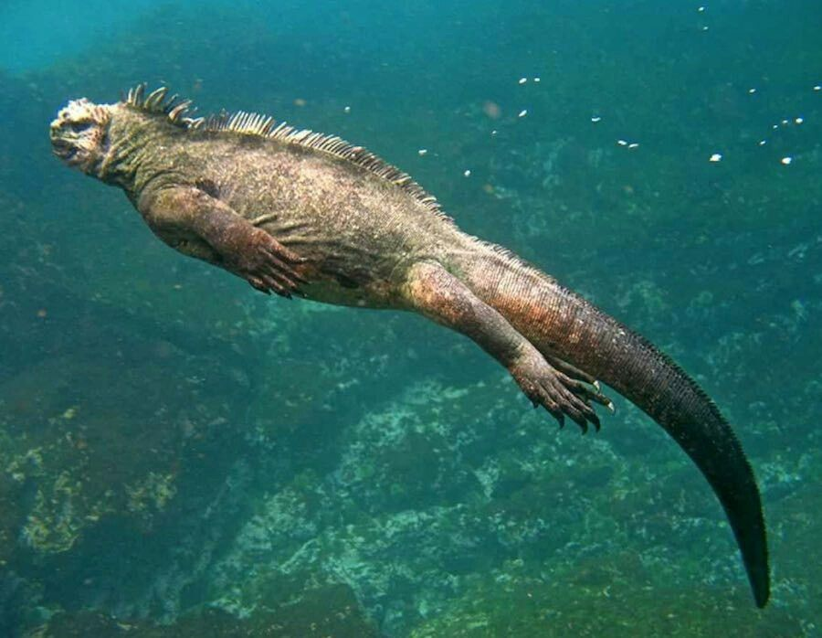
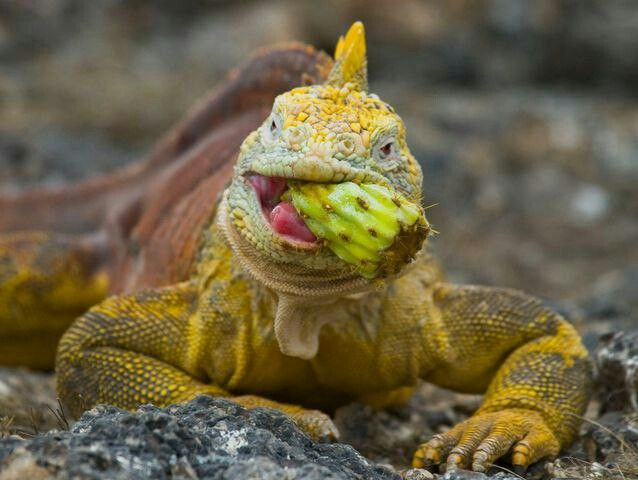
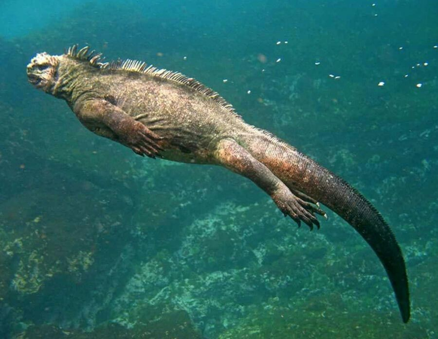
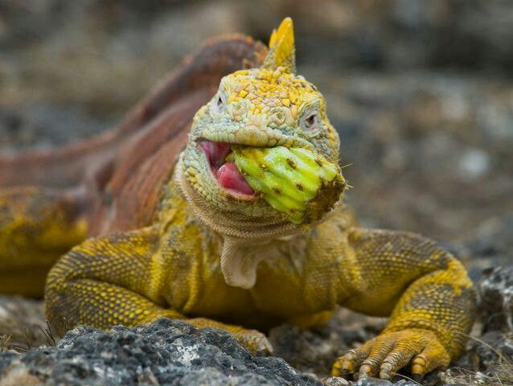
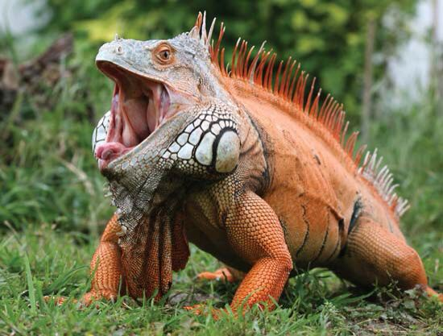
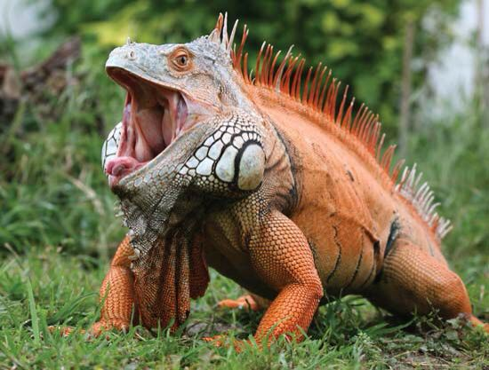

El mundo secreto de las iguanas
Las iguanas son mucho más que“lagartos grandes que toman sol”. En realidad, son ancestrales que
llevan millones de años adaptándose a sobrevivientes a ecosistemas tan distintos como selvas
tropicales, islas del Caribe o desiertos. A su vez, tienen diferentes habilidades.
Las iguanas se encuentran principalmente en América Central, América del Sur y el Caribe, aunque
algunas especies
habitan en zonas desérticas de Estados Unidos. Prefieren los bosques tropicales húmedos, manglares y
zonas costeras, pero su capacidad de adaptación es sorprendente: algunas viven en climas secos,
mientras que la iguana marina de Galápagos es la única que se lanzó al mar para sobrevivir. Estas
criaturas son escaladoras por naturaleza. Pasan gran parte de su vida en árboles o arbustos, lo que
les da seguridad contra depredadores. Sin embargo, no dudan en lanzarse al agua para escapar, ya que
son excelentes nadadoras.
 



 
